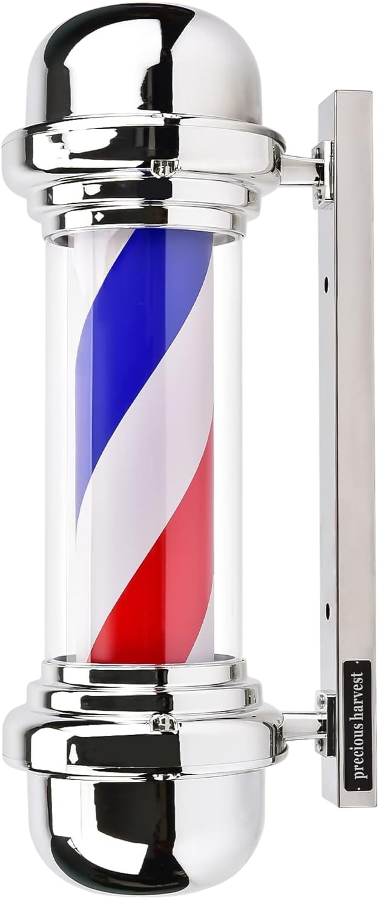
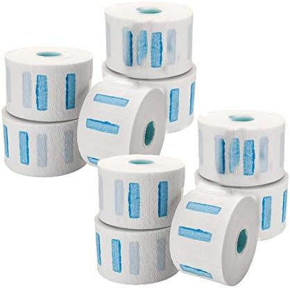

Organizador de Bancada Colcolo
Organizador antiderrapante com vários encaixes para tesouras, pentes e ferramentas de trabalho. Ajuda a manter a bancada mais arrumada e funcional.
Ver na AmazonSelecionámos acessórios práticos para o dia a dia da barbearia, desde organização de bancada e higiene até iluminação e proteção no corte.
Organizador antiderrapante com vários encaixes para tesouras, pentes e ferramentas de trabalho. Ajuda a manter a bancada mais arrumada e funcional.
Ver na Amazon
Capa de corte impermeável de corpo inteiro, pensada para cabelo, barba e coloração. Uma opção prática para proteger a roupa do cliente durante o serviço.
Ver na Amazon
Spray refrigerante, desinfetante e lubrificante para manutenção de máquinas e aparadores. Útil para limpeza rápida entre utilizações e para prolongar o desempenho das lâminas.
Ver na Amazon
Iluminação perfeita para cortes detalhados, vídeos e fotos. Tripé ajustável e luz regulável com comando remoto.
Ver na Amazon
Rolos de papel para proteção do pescoço, pensados para reforçar a higiene no corte. Solução simples, rápida e indispensável numa barbearia movimentada.
Ver na Amazon